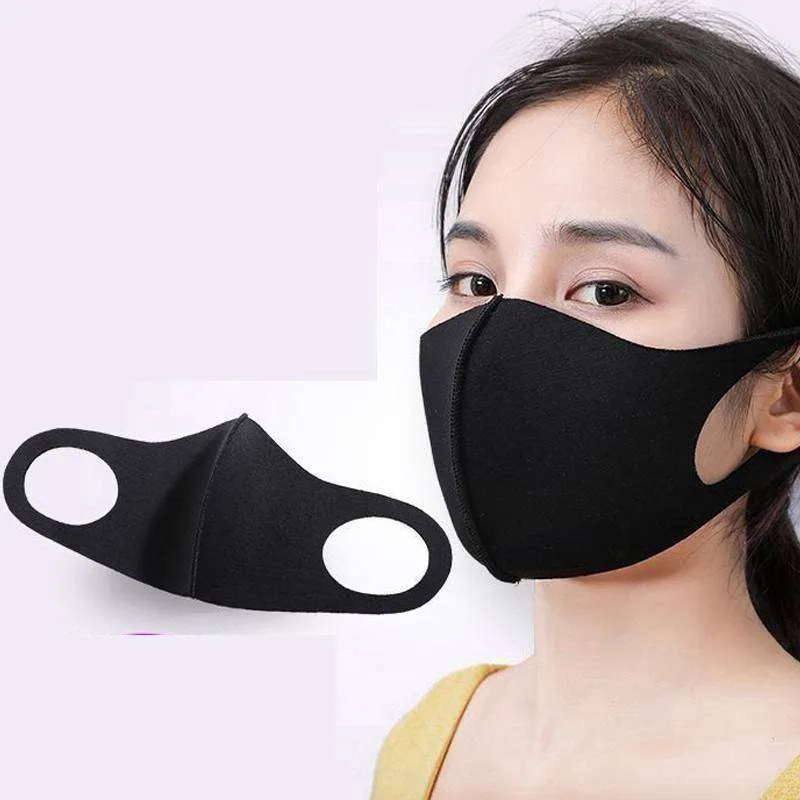

Masker Kain
Masker kain adalah alternatif masker sekali pakai yang dapat digunakan berulang kali. Terbuat dari bahan seperti katun, linen, atau campuran serat alami, masker ini nyaman dipakai, lembut di kulit, dan tetap memungkinkan pernapasan dengan baik. Masker kain membantu mengurangi penggunaan masker sekali pakai berbahan plastik yang sulit terurai, sehingga lebih ramah lingkungan. Masker kain cocok digunakan untuk aktivitas sehari-hari seperti sekolah, bekerja, atau bepergian. Dilengkapi tali elastis dan desain sesuai bentuk wajah, masker ini memberikan perlindungan dasar dari debu, polusi, dan percikan droplet.
Harga: Rp12.000
Checkout Sekarang